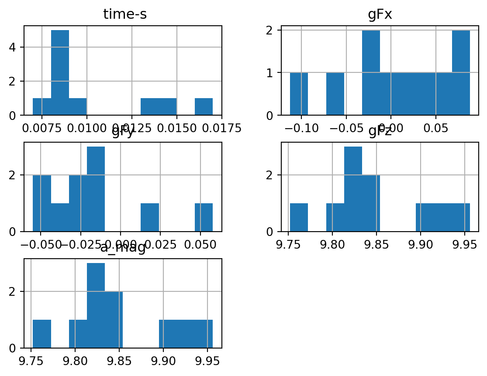
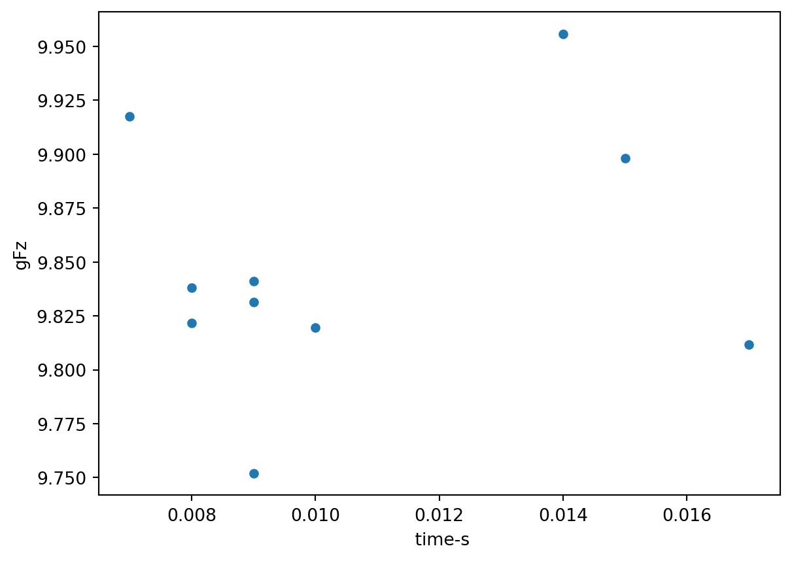

Pandas is a Python package built to work with spreadsheet-like data, and it is very good at its job. Pandas stores data in something called a “dataframe”. A dataframe is simply data stored in rows and columns. As an example, here is some sample data taken by an accelerometer sitting on an elevator floor:
Every dataframe has labels attached to its columns and rows. In this example, the row labels are just the first 10 integers and the column labels are “time”, “gFx”, “gFy”, and , “gFz”. Labeling the rows and columns is nice because you can access data using the row and column labels instead of indices.
13.1 Creating dataframes
A dataframe can be initiated in many ways but the most common are: from file, from a dictionary, and from an array or list. We’ll discuss each way separately.
13.1.1 Reading from a .csv file.
The most-used function from the pandas module is read_csv which is used to read a csv-formatted file into a data frame. To use it, simply call the pandas.read_csv function and pass in the path to the .csv file. (Here is a link to the file.)
from pandas import read_csvelevator_data = read_csv("elevator.csv",index_col =0)print(elevator_data)
The keyword argument index_col = 0 indicates that the row labels should be taken from the first column in the csv file. There are many, many possible keyword arguments that can be used to customize the way read_csv reads a file into a dataframe. I’ll highlight just a few and refer you to the documentation for the rest:
delimiter- use this to specify the character that separates the data from each other. The default is “,” for .csv files.
header - use this to specify which row contains the column names. Usually this occurs on the first row (header = 0) but not always.
usecols - use this to specify which columns from the file should be included in the dataframe.
skiprows - line numbers to skip when building the dataframe. Can be either a single integer (skip the first n lines) or a list of integers and it will skip all rows in the list.
The rename() function can be used if you don’t like the default index values (integers if you read from file) and want to reassign them.
time gFx gFy gFz
A 0.007 -0.0056 -0.0046 1.0120
B 0.008 0.0070 0.0024 1.0022
C 0.008 0.0000 0.0059 1.0039
D 0.009 0.0054 -0.0022 1.0032
E 0.009 -0.0015 -0.0056 1.0042
F 0.009 0.0037 -0.0020 0.9951
G 0.010 -0.0020 -0.0020 1.0020
H 0.014 0.0090 -0.0025 1.0159
I 0.015 0.0012 -0.0037 1.0100
J 0.017 -0.0115 -0.0020 1.0012
13.1.2 Create from a dictionary
If your data is in a dictionary you can use the DataFrame function (case sensitive) to initialize the dataframe. Key values in the dictionary correspond to columns in the dataframe.
from pandas import DataFrameelevator = {"time":[0.007,0.008,0.008,0.009,0.009,0.009,0.01,0.014,0.015,0.017],"gFx":[-0.0056,0.007,0,0.0054,-0.0015,0.0037,-0.002,0.009,0.0012,-0.0115],"gFy":[-0.0046,0.0024,0.0059,-0.0022,-0.0056,-0.002,-0.002,-0.0025,-0.0037,-0.002],"gFz":[1.012,1.0022,1.0039,1.0032,1.0042,0.9951,1.002,1.0159,1.01,1.0012]}elevator_data = DataFrame(elevator)print(elevator_data)
The row indices will default to the a set of integers starting at 0. If you want to index the rows with other labels, use the index keyword argument.
from pandas import DataFrameelevator = {"time":[0.007,0.008,0.008,0.009,0.009,0.009,0.01,0.014,0.015,0.017],"gFx":[-0.0056,0.007,0,0.0054,-0.0015,0.0037,-0.002,0.009,0.0012,-0.0115],"gFy":[-0.0046,0.0024,0.0059,-0.0022,-0.0056,-0.002,-0.002,-0.0025,-0.0037,-0.002],"gFz":[1.012,1.0022,1.0039,1.0032,1.0042,0.9951,1.002,1.0159,1.01,1.0012]}elevator_data = DataFrame(elevator,index = ["A","B","C","D","E","F","G","H","J","K"])print(elevator_data)
time gFx gFy gFz
A 0.007 -0.0056 -0.0046 1.0120
B 0.008 0.0070 0.0024 1.0022
C 0.008 0.0000 0.0059 1.0039
D 0.009 0.0054 -0.0022 1.0032
E 0.009 -0.0015 -0.0056 1.0042
F 0.009 0.0037 -0.0020 0.9951
G 0.010 -0.0020 -0.0020 1.0020
H 0.014 0.0090 -0.0025 1.0159
J 0.015 0.0012 -0.0037 1.0100
K 0.017 -0.0115 -0.0020 1.0012
13.1.3 Create from a list
Sometimes you have data in a list or multiple list and would like to combine all of that data and form a dataframe. This can also be done using the DataFrame function (case sensitive remember!). When initializing with lists, you have to also use the columns keyword argument to specify what you want the column labels to be.
Extracting data from the dataframe could mean several things. The most common possibilities include:
accessing a single number using row and column labels or row and column indices.
accessing one or several columns of the dataframe.
accessing one or several rows of the dataframe.
slicing from the “middle” of the dataframe. (i.e. Not entire columns or entire rows.)
accessing only elements in the dataframe that meet a certain criteria.
We’ll cover each of these tasks one at a time.
13.2.1 Extracting General Information
Sometimes the dataframe is quite large and you’d like to inspect just a small portion of it. You can use dataframe.head(n) to look at the firstn rows in the dataframe and dataframe.tail(n) to look at the lastn rows.
elevator_data.head(3)elevator_data.tail(4)
time
gFx
gFy
gFz
G
0.010
-0.0020
-0.0020
1.0020
H
0.014
0.0090
-0.0025
1.0159
J
0.015
0.0012
-0.0037
1.0100
K
0.017
-0.0115
-0.0020
1.0012
To get a list of the column or row labels, use the variables dataframe.columns and dataframe.index.
To extract a single number from a dataframe, use the dataframe.at[] or dataframe.iat[] objects. The at object should be used if you want to locate the number using row and column labels and iat should be used when you want to access the number using row and column indices. Let’s see an example:
You can bundle the column names into a list and extract multiple columns at once.
elevator_data[["gFx", "gFy", "gFz"]]
13.2.4 Accessing entire rows
Accessing rows in a dataframe is done with the help of the dataframe.loc[n] or dataframe.iloc[n] dictionary. loc should be used if you want to slice using row and column labels whereas iloc should be used if you want to slice out using indices.
We have already seen boolean slicing in Numpy Arrays and we can use something similar on Pandas. Let’s see an example:
from pandas import DataFramefrom numpy import transposetime = [0.007,0.008,0.008,0.009,0.009,0.009,0.01,0.014,0.015,0.017]gFx = [-0.0056,0.007,0,0.0054,-0.0015,0.0037,-0.002,0.009,0.0012,-0.0115]gFy = [-0.0046,0.0024,0.0059,-0.0022,-0.0056,-0.002,-0.002,-0.0025,-0.0037,-0.002]gFz = [1.012,1.0022,1.0039,1.0032,1.0042,0.9951,1.002,1.0159,1.01,1.0012]elevator_data = DataFrame(transpose([time,gFx,gFy,gFz]),columns = ["time", "gFx","gFy", "gFz"],index = ["A","B","C","D","E","F","G","H","J","K"])elevator_data[elevator_data["time"] <0.01] # Slice only the rows where time < 0.01
time
gFx
gFy
gFz
A
0.007
-0.0056
-0.0046
1.0120
B
0.008
0.0070
0.0024
1.0022
C
0.008
0.0000
0.0059
1.0039
D
0.009
0.0054
-0.0022
1.0032
E
0.009
-0.0015
-0.0056
1.0042
F
0.009
0.0037
-0.0020
0.9951
The statement elevator_data["time"] < 0.01 produces a boolean sequence which can be used as a set of indices to access only those entries where time is less than 0.01.
More complex boolean slicing can be done with the use of the query function which allows you to be more specific about your boolean conditions. The example below will extract all rows in the dataframe where time > 0.008 and gFz is greater than 1.
Add print statements to the cell above until you understand what each line of code does.
Add comments next to the line of code to help you remember.
13.3 Performing Calculations
Dataframes are similar to numpy arrays in that you can do math across an entire dataset. This makes mathematical calculations very easy. Look at the example below and try to guess what calculation is being performed
You may have noticed that sum method that was used to sum up each column. The keyword argument axis = 1 indicates that you want to sum over rows, not over columns. (axis = 0 would result in summing over columns.) There are a few other handy methods for common mathematical operations.
min() - Find the minimum value.
max() - Find the maximum value.
cumsum() - Cumulative sum, just like in numpy.
std() - Standard deviation.
mean() - Mean or average.
quantile(q) - Find value of a give quantile q.
There are a multitude of other useful math functions available. See here for a more comprehensive list. Basically, any function that numpy has, pandas will also have.
13.4 Modifying the dataframe
13.4.1 Adding new columns
A new column can be added to a dataframe by typing dataframe[columnname] = followed by a list,tuple, or array containing the new entries. For example:
A row can be added to a dataframe with the append() function. The argument to this function must be either i) another dataframe or ii) a dictionary. Let’s see examples of both.
from pandas import DataFrameelevator_data.append({"time":0.02,"gFx":-0.028,"gFy":0.018,"gFz":1.028},ignore_index =True) # Append using a dictionary.elevator_data2 = DataFrame({"time":[0.02,0.025],"gFx":[-0.028,-0.022],"gFy":[0.018,-0.012],"gFz":[1.028,1.042]})elevator_data.append(elevator_data2)
time
gFx
gFy
gFz
a_mag
A
0.007
-0.05488
-0.04508
9.91760
9.917854
B
0.008
0.06860
0.02352
9.82156
9.821828
C
0.008
0.00000
0.05782
9.83822
9.838390
D
0.009
0.05292
-0.02156
9.83136
9.831526
E
0.009
-0.01470
-0.05488
9.84116
9.841324
F
0.009
0.03626
-0.01960
9.75198
9.752067
G
0.010
-0.01960
-0.01960
9.81960
9.819639
H
0.014
0.08820
-0.02450
9.95582
9.956241
J
0.015
0.01176
-0.03626
9.89800
9.898073
K
0.017
-0.11270
-0.01960
9.81176
9.812427
0
0.020
-0.02800
0.01800
1.02800
NaN
1
0.025
-0.02200
-0.01200
1.04200
NaN
13.5 Other useful methods
13.5.1 Getting a summary of your dataframe.
The describe() function will calculate several useful statistical quantities and display them in a dataframe.
elevator_data.describe()
time
gFx
gFy
gFz
a_mag
count
10.000000
10.000000
10.000000
10.000000
10.000000
mean
0.010600
0.005586
-0.015974
9.848706
9.848937
std
0.003438
0.060314
0.033201
0.059088
0.059124
min
0.007000
-0.112700
-0.054880
9.751980
9.752067
25%
0.008250
-0.018375
-0.033320
9.820090
9.820186
50%
0.009000
0.005880
-0.020580
9.834790
9.834958
75%
0.013000
0.048755
-0.019600
9.883790
9.883886
max
0.017000
0.088200
0.057820
9.955820
9.956241
13.5.2 Plotting your dataframe.
A histogram of each column can be easily generate with the dataframe.hist() function.
To make a scatter plot of two columns in your dataframe, use dataframe.plot.scatter(). The x and y keyword arguments should be used to specify which columns to plot.
elevator_data.plot.scatter(x ="time", y ="gFz")
<AxesSubplot:xlabel='time', ylabel='gFz'>
You can also plot a single column vs. the row labels using the plot function
elevator_data["gFz"].plot()
<AxesSubplot:>

You can also use this function to plot a single row vs the column labels.
elevator_data.iloc[2].plot()
<AxesSubplot:>

A wealth of other functions exist for pandas and I will not exemplify or explain them here because it is beyond the scope of the class. A nice summary sheet for pandas can be found here
13.5.3 Writing your dataframe to file
You have already used savetxt to save an entire array of numbers to a file in one step. If your data is in a pandas dataframe, saving that dataframe to file couldn’t be easier; just use dataframe.to_csv("filename").
elevator_data.to_csv("myelevatorData.csv")
Several helpful keyword arguments are available when writing to a file. I’ll list a few of them below.
sep - Delimiter or character used to separate the data as a length-one string. Default is a comma (“,”).
columns - specify which columns in your dataframe to write as a list of column labels.
index - True if you want the row labels written and False if you don’t
compression - specify the compression scheme as a string. Options are ‘zip’,‘gzip’, ‘bz2’,‘zstd’, and ‘tar’.
Depending on the type of data you are working with, there is a good argument for always using to_csv to write data to file, never needing savetxt.
13.6 Flashcards
How does read_csv work? Give a short example.
What is the keyword argument usecols used for when reading a dataframe from file?
How does the DataFrame function work and what type of arguments can you pass it? Give a few short examples.
How do you access/extract multiple columns in their entirety from a dataframe.
How do you access/extract multiple rows in their entirety from a dataframe.
How do you access/extract the middle part of a dataframe?
How do you access/extract only the numbers in a dataframe that meet a given criteria?
How do you add a new column to a dataframe?
How do you add a new row to a dataframe?
Recite Mosiah 4:27.
13.7 Exercises
In homework problem 3 from the chapter on dictionaries and sets, you built a dictionary containing planetary information for your top three favorite planets.
Create a dataframe from this dictionary.
Make the name of the planet be the row label.
Write this dataframe to a csv file.
In homework problem 2 from the chapter on numpy, you calculated the moment of inertia for 1000 different objects.
Create a dataframe out of the mass, radius, length, and inertia data. The dataframe should have four columns and 1000 rows.
Use describe to get a summary of the data.
Write the data to a .csv file and inspect the file to ensure that you did it correctly.
In homework problem 3 from the chapter on I/O, you read planetary data into a .csv file using genfromtxt.
Read the same file into a dataframe using read_csv. Let the name of the planets be the row label and the physical property be the column label.
The sixth column contains the acceleration due to gravity for all of the planets in units of m/s\(^2\). Recalculate these values to be in terms of earth’s value (\(g = 9.78\) m/s\(^2\)) and modify the sixth column.
The seventh column contains the orbital period for all of the planets in units of earth years. Recalculate these values to be in earth days and modify that column accordingly.
Add a new column labeled “Surface Temperature” that contains the surface temperature for each planet in Kelvins as given here.
Add a new row for a hypothetical planet (“planet X”) and set its physical properties equal to the average of the other 9 planets that are already in the dataframe.
Determine which planets have an acceleration due to gravity that is less than earth’s value ($9.8 $ m/s\(^2\))
Determine which planets have an eccentricity that is greater than \(0.04\).
Determine which planet(s) have an inclination greater than \(1.5^\circ\)and have 10 or more satellites.
Write the a .csv file containing the following columns in the dataframe: “Name”, “SurfaceGravity”, “OrbitalPeriod”, and “Satellites”.
Write the entire dataframe to a separate file.
Hints:
For part 5 you will want to use describe to generate a dataframe of summary statistics. Then use append to add the row labeled “mean” to your original planetary database. Then use rename to rename that row from mean to Planet X.
The column label for the acceleration due to gravity start with a space: ” SurfaceGravity” not “SurfaceGravity”.
For part 8 use query. To include the space in the column names, enclose the name in backticks “`”. (i.e. ” Inclination > 0.04”)